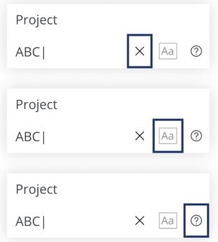

IFS Cloud · Accessibility
Search without a mouse: keyboard navigation for IFS Cloud
To search in IFS Cloud you had to click into every field you wanted to use, and click again for every list of values. I was the main designer for a keyboard model for search, filter and search-context panes, built on WCAG and the ARIA authoring practices. The first design I drew turned out to be the wrong one, and an accessibility review is what showed me.
01 · ProblemEvery field you wanted to search on was a click away, and so was every list of values
Search, filter and search-context panes are where people in IFS Cloud start almost every task. They were built for the mouse. To put a value in a search you clicked the field. To pick from a list of values (LOV) you clicked again, and with an advanced LOV you clicked again after that. For someone who can't use a mouse, that isn't slow. It is a wall.
Users find it hard to navigate the search, filter and search-context panes by keyboard, and rely on the mouse.
The problem statement, as written at the startThe need wasn't only about assistive technology. People who work in dense data screens all day expect to tab through fields and pick from LOVs and enumerations without reaching for the mouse. The capability already existed in other IFS products, and competitors such as SAP and Salesforce let you move through search fields easily. In IFS Cloud, the existing keyboard support for these panes was none.
What the work had to deliver
- Enter runs the search. Focus and the search action respond to the keyboard the way people expect.
- Move through search, search-context and filter fields from the keyboard alone.
- Choose values with directional keys once a field has focus. The mouse stays optional, apart from possibly date and date-time pickers.
- Serve all IFS end users, including people with low vision, blindness or motor impairments, with WCAG Level AA as the bar: keyboard operability, contrast, concise language.
One constraint sat over all of it. The framework had to support the model, so a proof of concept ran in parallel to confirm the design was technically possible before anyone committed to it.
02 · ResearchLearn the keys people already know, then what the standards say
The keys no design is allowed to fight
I started by listing the interactions every user already carries from the browser and operating system: Tab and Shift+Tab, Enter, the arrow keys, Escape, Ctrl/Cmd+F, Up and Down in autocomplete, Alt+Shift+Left/Right for history, Ctrl/Cmd+A. The rule that came out of the list was simple: a custom interaction must never collide with one of these.
What IFS already did, and the principles behind it
Aurena, the IFS Cloud client, already had a small amount of keyboard behaviour: Tab moves through the top bar, Space opens and closes the menu pane, and Enter or Space plus the arrows work through the account menu. Behind that sat the IFS keyboard principles I needed the new model to follow:
- Tab is the main focus mover, Shift+Tab goes back.
- Arrow keys move within a single component.
- Enter or Space selects or toggles, and Esc exits.
- Focus order runs upper-left to lower-right, though initial focus can go to where the user most likely wants to be.
- Fewer interactions is better. For example, expanding “More” puts focus straight into its first item.
How others did it
I read the keyboard documentation for SAP Business ByDesign and for Oracle's applet-style screens to see how other enterprise products treat dense search forms.
What the standards say
The design hypothesis was that an efficient keyboard model, grounded in WCAG and ARIA, would give a more inclusive experience, using ARIA roles, states and properties and meeting Level AA. The ARIA Authoring Practices Guide is where that stopped being abstract. Its menubar and menu patterns describe exactly the kind of widget a row of search attributes is:
- The whole widget is one stop in the tab sequence. Arrow keys move inside it.
- Opening a menu puts focus on its first item.
- Enter opens a submenu. Space toggles checkbox and radio items.
For this first pass I left LOVs, the calendar, the Advanced button and “More” out of scope, so the model could be settled on the simplest controls first.
03 · OptionsTab between attributes, or treat the pane as a menubar?
I designed two models for moving between the attributes of a search, and put the first one in front of an accessibility reviewer.
Why the review overturned Option A
The reviewer's note on my first storyboard was direct: we shouldn't be using Tab to move between the search attributes, and we should see those elements as a menubar. The practical consequence is easy to see. With Tab as the mover, every attribute in the pane is its own stop in the tab sequence, so a keyboard user presses Tab through all of them to reach the Search button, and every added filter makes that trip longer. A menubar costs one stop however many attributes it holds.
The reviewer also noted that Enter and Down arrow can both open a menu item's submenu, which is how the ARIA pattern works. I carried that straight into the final design. Opening on either key means people who reach for the arrow keys and people who reach for Enter are both right.
A second decision: what happens to text you typed and left behind?
Moving by keyboard means leaving a field is easy, sometimes mid-typing. I laid out the three things the interface could do with text sitting in a search box when focus leaves it:
04 · Final designOne tab stop, arrows inside, Enter and Esc as the way in and out
The final spec, Interaction Guideline for Search, Filter and Search Context panes, turns the menubar model into rules for each kind of control. Tab remains the way to leave the bar and reach buttons such as Search. Everything inside it moves on arrow keys.
| Control | Keyboard behaviour |
|---|---|
| Menu buttons | Left and Right arrows move focus between the buttons. Enter or Down arrow opens the dropdown. |
| Text and number values | Down arrow or Enter opens the dropdown with focus in the field. Down moves on through the field's own controls, and Up reverses. In the field, Left and Right move the text cursor. |
| Saved values | Focus lands on the menu button first. Enter or Down opens the menu with the saved values, and Enter on the close (✕) clears the value. |
| Checkboxes | Space toggles. |
| Enumerations | Up and Down move through values. Enter selects one and closes. Space toggles checkboxes, and Enter activates the Set button when there is one. |
| Search / Apply, Clear / Reset | Enter activates them. |
| 3-dot menu, Saved Search menu | Enter or Down arrow opens them. |
| Everywhere | Enter or Down arrow opens menus, but not click activations. Esc closes any open menu, dropdown or help guide. |
Inside a text field: a short focus path
A text or number value is the richest case, because the field carries its own small controls. Rather than make people Tab into each one, the arrow keys walk the same path in both directions:

Focus you can see
The design draws a strong focus ring on each stop in the path, so a keyboard user can tell at a glance where they are.
- Down moves from the field into clear, match case and help. Up goes back.
- Space turns Match Case on and off.
- Enter shows or hides the help guide.
The question that needed the most careful answer: what does Enter do?
Early in review, someone asked whether Enter should run the search even when focus is somewhere else in the pane. The honest answer is that it depends on a user setting, “Run search”, so the spec spells out both paths instead of picking one.
The tricky areas I wrote down on purpose
- Esc closes the help guide first, then the dropdown, one layer per press.
- Click activations are separate. A control that is activated by click, such as a tooltip trigger, opens on Enter only and closes on Esc. Enter or Down arrow opening a menu does not apply to it.
- Tabbing into the whole search pane as one region was deliberately left out of this pass.
- One technical problem went to engineering: opening the help guide moved focus back to the field instead of keeping it where the user was.
05 · TestingPrototypes, reviews, and walking the real build against the spec
Validation happened in layers. The storyboard of key interactions, drawn against the ARIA guidelines, went through the accessibility review described above. I built test designs and three test prototypes to try the model, and the open questions that came out of those rounds, such as whether Down arrow should work in a given place and whether Advanced should count as a search, went back into the spec as revisions.
Once there was a build, I walked it control by control against the spec and logged every deviation. The deviations were the useful part:
| Control | What I checked | What I found |
|---|---|---|
| Text field | Down arrow or Enter opens the dropdown and the field takes focus. Enter saves the text as a filter. The filter and its values form one focus area, with the clear button as its own. Esc closes. | Pressing a key the field doesn't use more than five times in a row triggered a client error. |
| Number field | The same pattern as the text field. | The same bug, at an even lower threshold: more than three unassociated key presses. |
| Enumeration | Down arrow opens, and focus should land on the first value. Up and Down move. Space selects several, then Set plus Enter saves them. Enter selects the highlighted value. | Focus did not land on the first value when the list opened. With several values selected, Enter selected only the focused one. |
| (Multi) LOV text field | Down arrow or Enter opens the dropdown. Down from the field moves to the Find button, and Enter on it opens the advanced multi-LOV dialog. Esc closes. | A small alignment issue on the Find button, passed to the developer who owned it. |
None of these were problems with the model. They were the kind of edge a spec only reveals once you press the keys. That is also why the spec spells out where focus goes after each key, not only what each key does.
06 · ResultA keyboard model with one rule per control, grounded in the standard
The outcome of this work is a documented, standards-based keyboard model for IFS Cloud's search, filter and search-context panes, with a rule for every control type and an answer for the awkward cases. It reached from the simplest text field to the multi-LOV dialog. Its value is in coverage and consistency rather than a single before-and-after number, so here are the honest counts:
What I took from it
- Start from the pattern that already exists. The ARIA menubar pattern had answered my hardest question before I asked it, and following it meant the behaviour would also be what screen reader users expect.
- Get the first design in front of a specialist early. My first model looked reasonable and would have made every added filter a longer trip to the Search button. A short review was cheaper than shipping it.
- Write the spec as questions and answers. “What does Enter do?” had two correct answers depending on a setting, and the spec is far more useful for saying so.
- Test the build key by key. The defects were all at the edges, such as repeated keys and focus that didn't land where it should, and only showed up with a real keyboard.
Under NDA
NDA-protected designs and files
This case study shows what I can share publicly. If you would like to see more of the design work behind it, the NDA-protected designs and files are here. Enter the password I shared with you to open them.
Want to see more and don't have the password? Request access by email. It opens a ready-written message to me.